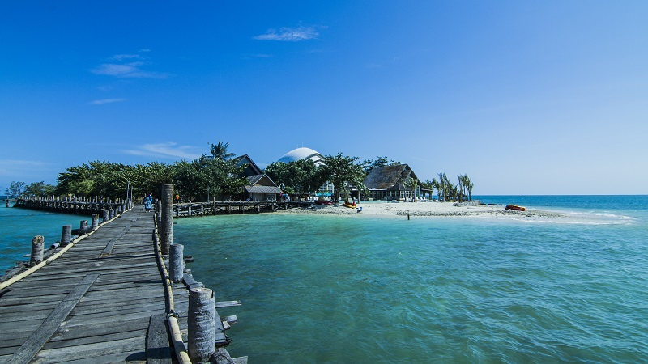
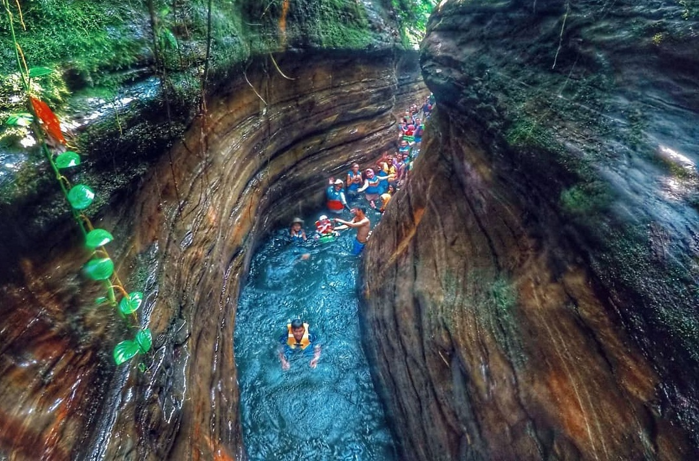

Tanjung Lesung
Tanjung Lesung juga dikenal sebagai kawasan resort pantai terbesar dengan area seluas 1500 hektar dan telah menjadi pilihan wisatawan lokal dan asing.

Citaman
Wisata Pemandian Alam Citaman di Pulosari Pandeglang Banten adalah salah satu tempat wisata yang berada di Jl. Raya Jiput, Desa Sukasari, Kecamatan Pulosari...

Curug Putri
Curug Putri yang satu ini berada di Taman Hutan Rakyat (Tahura) kawasan Sukarame, Carita, Kabupaten Pandeglang, Banten. Curug Putri Tahura ini juga masih satu...